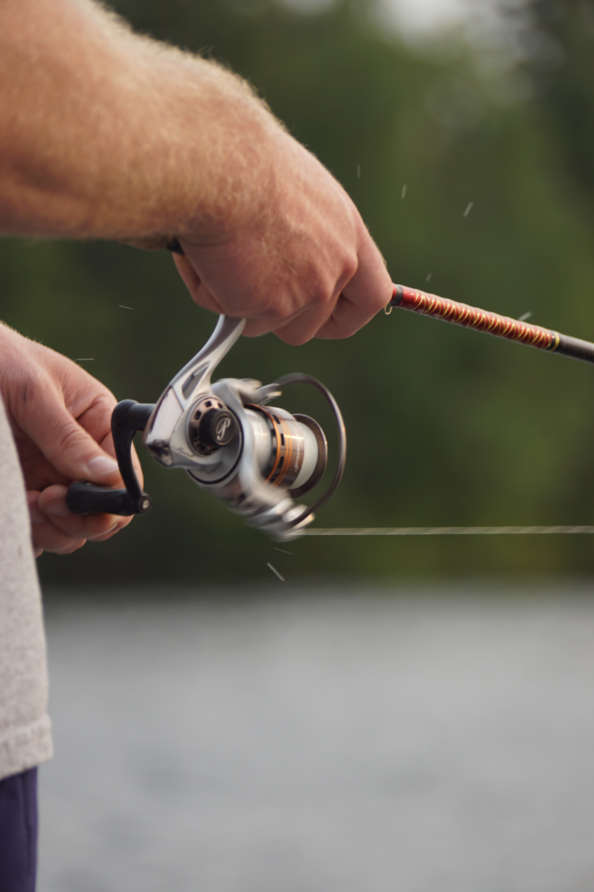
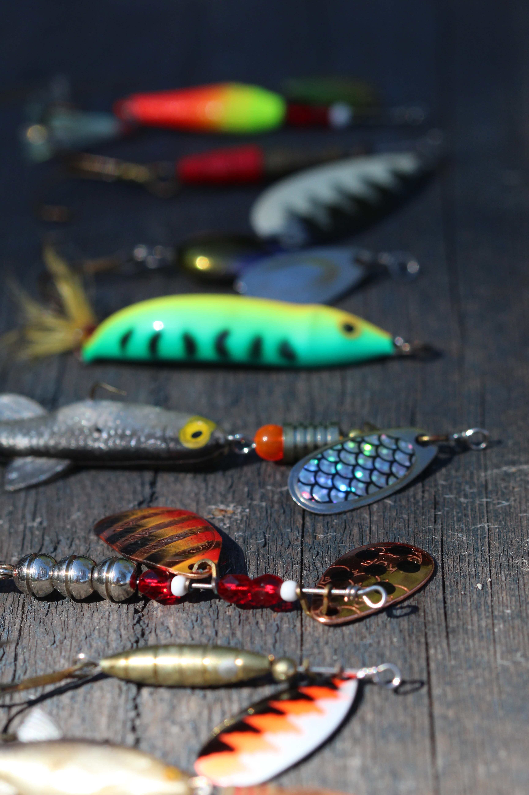

Spinning Tackle Fishermen


Being equally effective in these waters. The spinning tackle offers better mobility where the fly rods would need more room. Being easier for beginners, this way of fishing is just as fun.